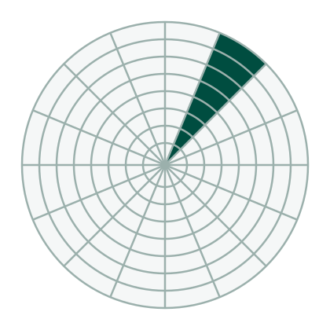
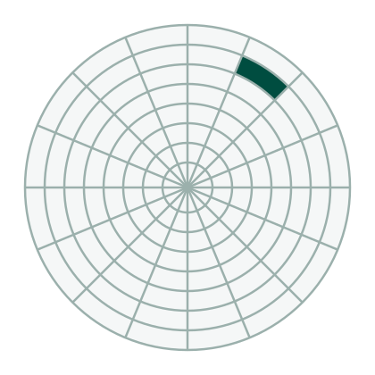

1 is de as met de naaf waarop de platter vastgeklemd zit, 2 is de arm,
3 is de lees/schrijfkop aan het uiteinde van die arm, 4 is de platter en 5 is de actuator
met de magneet die de arm doet bewegen.
Aan welke snelheid roteren de platters binnen de harde schijf?Vergeet de eenheid niet.
7200 toeren per minuut. De meeste mechanische harde schijven draaien aan
5400 of 7200 toeren per minuut; in een server loopt dat op tot 15000.
Wat zit er tussen de read write heads en de platters?
Een luchtkussen. De kop raakt de platter niet aan maar zweeft er vlak
boven.
Hoe beweegt de actuator arm van links naar rechts?
Met een (tweede) motor
Door middel van magnetisme
Door middel van de zwaartekracht
Zet de begrippen track sector, disk sector, track bij de juiste tekening:


Links de track, in het midden de disk sector en rechts de track sector.
Een track is een volledige ring, een disk sector is een taartpunt door alle tracks heen, en
een track sector is het vakje waar die twee elkaar kruisen. Dat laatste is de sector van
512 byte waar de data in staat.
Hoe wordt data opgeslagen op de platter?
Door middel van magnetisme
Met een laser
Door de head te laten crashen op de platter
Wat is de vormfactor van de harde schijf die getoond wordt?
3,5″. Dat is de vormfactor van een harde schijf in een desktop; in een
laptop zit een schijf van 2,5″.
Redeneervragen
Wat heeft een invloed op de snelheid waarmee bits gelezen en geschreven kunnen worden?
De snelheid waarmee de platters draaien, want die bepaalt de rotational
latency. De snelheid waarmee de arm beweegt, want die bepaalt de seek time. En de plaats van
de data op de schijf, want in de buitenste zones staan meer sectoren onder de kop per
omwenteling.
Hoeveel bytes worden bijgehouden in een sector?
512 byte, en daarachter komt nog de error correcting code.
Wat merk je op wat betreft sectoren die staan aan de binnenkant van de harde schijf en sectoren die staan aan de buitenkant van de harde schijf?
Een track aan de buitenkant is langer dan een track aan de binnenkant, dus
er passen meer sectoren op. Elke sector draagt wel evenveel bytes, waar hij ook ligt. Bij
Cylinder Head Sector krijgt elke track evenveel sectoren en gaat die extra plaats verloren;
Zone Bit Recording laat het aantal sectoren per zone variëren en wint die plaats terug.